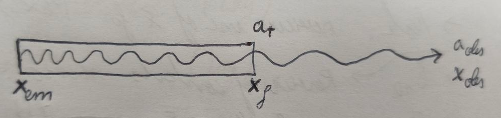

Appendix B
Velocity Units Examples [3.2.3]

Let’s start observing the schematic situation depicted in Fig. 6: Suppose that two photons are emitted with rest-wavelength \(\lambda_\alpha\), one from \(\vec{x}_{\mathrm{em}}\), and another from \(\vec{x}_f\), and received at \(\vec{x}_{\mathrm{obs}}\) (with \(a_{\mathrm{obs}}\)). The detected wavelengths would be: \begin{align} \lambda_{\mathrm{obs}}^\alpha\left(\vec{x}_{\mathrm{em}}\right) = \lambda_\alpha \frac{a_{\mathrm{obs}}}{a_{\mathrm{em}}} ; \qquad \lambda_{\mathrm{obs}}^\alpha\left(\vec{x}_f\right) = \lambda_\alpha \frac{a_{\mathrm{obs}}}{a_f}, \tag{B.1} \end{align} respectively. Now, in velocity units, we have that the corresponding photons would appear at: \begin{align} v_\dagger^\alpha\left(\vec{x}_{\mathrm{em}}\right) = c \ln\left( \frac{\lambda_\alpha}{\lambda_\dagger} \frac{a_{\mathrm{obs}}}{a_{\mathrm{em}}} \frac{a_\dagger}{a_{\mathrm{obs}}} \right) = c \ln\left( \frac{\lambda_\alpha}{\lambda_\dagger} \frac{a_\dagger}{a_{\mathrm{em}}} \right) ; \qquad v_\dagger^\alpha\left(\vec{x}_f\right) = c \ln\left( \frac{\lambda_\alpha}{\lambda_\dagger} \frac{a_{\mathrm{obs}}}{a_{f}} \frac{a_\dagger}{a_\mathrm{obs}} \right) = c \ln\left( \frac{\lambda_\alpha}{\lambda_\dagger} \frac{a_\dagger}{a_{f}} \right) . \tag{B.2} \end{align}
Additionally, let’s consider the emission of yet two other photons (one from \(x_\mathrm{em}\) and another from \(x_f\)), but, in this case, let the associated rest-frame wavelength be \(\lambda_X\), hence: \begin{align} \lambda_{\mathrm{obs}}^X\left(\vec{x}_{\mathrm{em}}\right) = \lambda_X \frac{a_{\mathrm{obs}}}{a_{\mathrm{em}}} ; \qquad \lambda_{\mathrm{obs}}^X\left(\vec{x}_f\right) = \lambda_X \frac{a_{\mathrm{obs}}}{a_f}. \tag{B.3} \end{align} For the velocity units: \begin{align} v_\dagger^X\left(\vec{x}_{\mathrm{em}}\right) = c \ln\left( \frac{\lambda_X}{\lambda_\dagger} \frac{a_\dagger}{a_{\mathrm{em}}} \right) ; \qquad v_\dagger^X\left(\vec{x}_f\right) = c \ln\left( \frac{\lambda_X}{\lambda_\dagger} \frac{a_\dagger}{a_{f}} \right) . \tag{B.4} \end{align}
Now we are ready to make two important remarks: